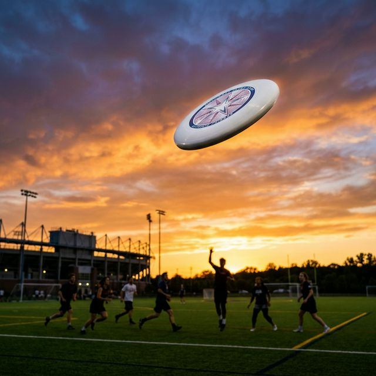

Bem-vindo ao meu espaço pessoal na web! Aqui podes encontrar a minha "impossible list" e um pouco mais sobre mim.

Ana Alfaiate
MEIC & LEBiom
Estudante de Mestrado em Engenharia Informática e de Computadores @ Técnico Lisboa
anajfalfa
ana-alfaiate
ana.alfaiate#1460
ana.alfaiate.01
Spotify
anajfalfaiate@gmail.com
ana.alfaiate@tecnico.ulisboa.pt
 ist1102903
Google Scholar
Ciência Vitae
ORCID
ResearchGate
ist1102903
Google Scholar
Ciência Vitae
ORCID
ResearchGate
O Meu Portfólio


📂 Portfólio

NEBM - IST
Cargo: Presidente e Coordenadora de IT
Liderei a reforma completa do website oficial, coordenando a equipa de informática e implementando melhorias estruturais modernas.
Coordenação de IT
Reforma de Website
Liderança

JOB2BE
Cargo: Colaboradora de IT e Design
Contribuí para o desenvolvimento e identidade visual da plataforma JOB2BE, especializando-me em gestão de base de dados e refinamentos de frontend.
PostgreSQL
IT & Design

CNE 1066 Ribamar
Cargo: Desenvolvedora Full-Stack
Desenvolvi um sistema de gestão abrangente e o website oficial para o agrupamento local de escuteiros, com um backoffice seguro.
Next.js
Prisma
SQLite

Discover Ultimate
Cargo: Líder de Projeto e Dev
Uma plataforma interativa desenhada para promover e organizar atividades de Ultimate Frisbee, mapeando a jornada desportiva da comunidade.
🏅 Percurso Desportivo
Uma sucessão dos desportos que moldaram a minha disciplina e espírito de equipa
Linha do Tempo
INESC-ID
Estagiária de Investigação (Mestrado)
Tópico: Inferência de Modelos Lógicos com SAT/ASP
Investigação no ARSR (Automated Reasoning and Software
Reliability), sob orientação de Pedro T. Monteiro e Vasco Manquinho.
Keywords: Redes Regulatórias, Inferência de Modelos, Answer Set Programming, SAT, Raciocínio Automático
Perfil INESC-ID: https://www.inesc-id.pt/member/30828f05-be75-4348-935a-c3adb9d93266/publications/
Agosto 2025 - Dezembro 2025
.svg.png)
DTU - Technical University of Denmark
Semestre de Intercâmbio Erasmus+
Engenharia Informática e de Computadores. Foco em Verificação de Programas, Fundamentos de Cibersegurança e Teoria Lógicas para Incerteza e Aprendizagem.
Mestrado em Engenharia Informática e de Computadores
Técnico Lisboa
Especialização em Inteligência Artificial e Algoritmos e Aplicações. Vários reconhecimentos de excelência académica.
Escola Avançada de Matemática
Autora & Instrutora
Criação e ensino de conteúdo de matemática avançada.
Corpo Nacional de Escutas (CNE)
Agrupamento 1066 Ribamar
Dirigente / Caminheira. Desenvolvimento de liderança e trabalho em equipa.
Web Summit & Lisboa Games Week
Voluntária
Apoio geral em grandes eventos de tecnologia e gaming em Lisboa (2023 & 2024).

NAPE - IST
Embaixadora do Técnico & Mentora
Apoio a novos alunos e representação do IST. Mentora no Programa de Mentoria (2022-2023).
Outubro 2024 - Abril 2025

Missão País
Missionária
Voluntariado universitário em Portugal, apoiando comunidades isoladas através de trabalho social.
NEBM - IST
Presidente & Coordenadora de TI
Presidente (Jul 2024 - Jul 2025). Coordenadora da Secção de TI (2023-2024), liderando a reforma do site.

LaSEEB
Estagiária de Investigação
Projeto: "Segmentação Automática de Cartilagem do Joelho em RM". Nota Final: 19.
JOB2BE
Colaboradora (TI & Design)
Desenvolvimento do site/sistemas (TI) e identidade visual (Design).
Licenciatura em Engenharia Biomédica
Técnico Lisboa
Média Final de 18.47/20. Múltiplos Diplomas de Excelência Académica (Santander/Técnico).

Faculdade de Medicina (ULisboa)
Monitora (Anatomia & Histologia)
Apoio a alunos do 1º ano de Engenharia Biomédica nas práticas de Histologia.
FISIOMAIS
Rececionista
Atendimento ao público e apoio administrativo numa clínica (Verão 2020 & 2021).
Karaté Shotokan (AKS)
4º Kyu
Prática de artes marciais focada em disciplina e foco físico.
Currículo
Ana Alfaiate
Estudante de Mestrado em Engenharia Informática e de Computadores
Estudante dedicada com experiência em desenvolvimento web, coordenação de equipas e representação estudantil.
As Minhas Ideias
Uma coleção de projetos e conceitos que me entusiasma explorar.
❄️ Globos de Neve de Ribamar
Design e produção de pisa-papéis/globos de neve com foco em Ribamar, Lourinhã, Zona Oeste e Geoparque Oeste.
👕 Equipamento Desportivo (CSCR)
Design e produção de kits desportivos para a Junta de Freguesia de Ribamar/CSCR. 10 kits principais e 10 secundários para uma equipa de Ultimate Frisbee.
📍 Apoio de Praia & Posto de Turismo
Ponto de apoio à praia servindo de posto de turismo em Ribamar (perto da Fonte das Avencas). Venda de globos de neve e disponibilização de panfletos. Operação sazonal de verão com bolsas para estudantes.
Aplicação de Saúde Unificada
Desenvolvimento de uma aplicação móvel de saúde para unificar os dados de saúde de diferentes fontes - exames, prescrições, médicos, especialidades, agendamentos, sistema de saúde público e privado.
SPMS (SNS) e sistemas de saúde privados.
Sistema Regulatório -- muito alto na Europa vs EUA
Desenvolver um Curso / Workshop / Website / Conta Instagram / Clube Estudantil do IST de Finanças, Economia e Investimentos
- Desenvolver uma plataforma sobre Finanças, Economia e Investimentos
- https://www.doutorfinancas.pt/investimentos/investimentos-15-conceitos-essenciais-que-deve-conhecer/
- https://www.abanca.pt/radar/aprender-investir-com-confianca/
- https://escoladasfinancas.com/
Desenvolver um Curso / Workshop / Website / Conta Instagram / Clube Estudantil do IST de Democracia e Direito
- Desenvolver uma plataforma sobre Democracia e Direito
https://www.os230.pt/democracia-101/